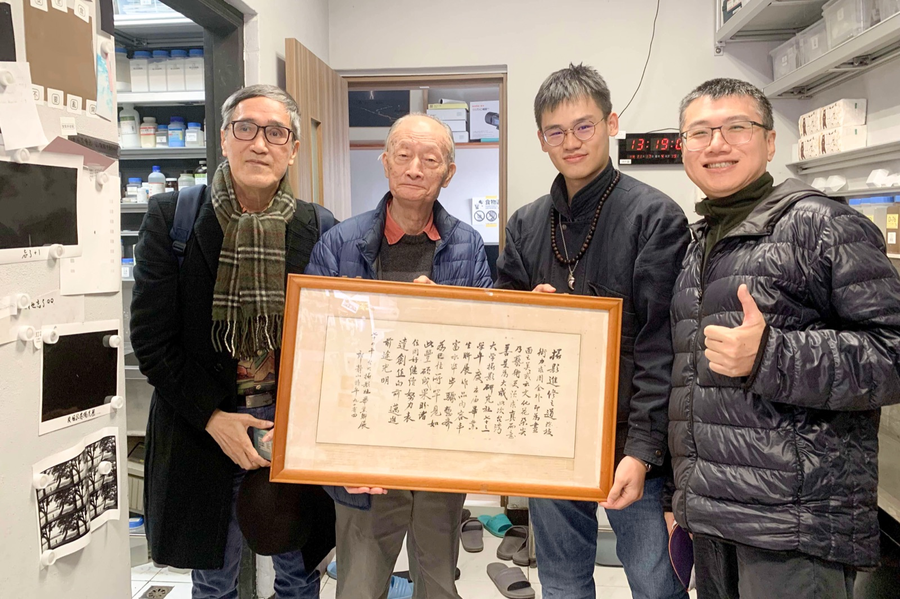

關於 About
許哲睿 HSU, Che-jui
許哲睿（HSU, Che-jui）
2003 年生，臺灣。
2022 年 5 月 20 日開始攝影，
2023 年 12 月起投入創作。
觀念藝術｜行為藝術｜國術（八極拳）｜塔羅｜4×5 大型黑白底片攝影｜AI 生成藝術｜佛家、道家思想
推動「Open Book Is Good ↗」開源自學專案。
學歷 Education
-
2026–
國立臺灣藝術大學 National Taiwan University of Arts
-
2026–
麻省理工學院 Massachusetts Institute of Technology (MITx)
-
2022–2026
東吳大學 Soochow University
師承 Mentors
- 攝影史姜麗華（國立臺灣藝術大學）。
- 創作實踐姚瑞中（國立臺灣師範大學、國立臺北藝術大學）。
- 暗房技術楊鎮豪（臺灣大學攝影社）。
- 塔羅張紹強／晨音（臺灣大學塔羅社）。
- 八極拳韓基祥（韓門武集）。
會員 Membership
- 台灣大學攝影研究社 National Taiwan University Photo Club
- 台灣攝影博物館文化學會 Society of Photographic Museum and Culture of Taiwan
- 視盟／台灣視覺藝術協會 Association of the Visual Arts in Taiwan
- 台灣攝影文化資產協會 Taiwan Photographic Cultural Heritage Association

左起：張國治（國立臺灣藝術大學教授／前理事長）、莊靈（第15屆國家文藝獎得主／創會理事長）、許哲睿、楊鎮豪（台大攝影社技藝指導老師）。
莊靈老師手持攝影大家郎靜山《進修攝影之道》，墨寶於民國73學年度贈台大攝影社畢業生聯展，時年郎老94歲。
考場幻影
2022 年 1 月 21 日——我戴著口罩，走進全國大學入學考試的試場。防疫規定下，冷氣與電扇皆不得開啟，前後門緊閉，唯一的換氣來自一扇孤窗。悶閉的空間疊上考試的腦力煎熬，叫人暈眩而失序；紙上的字句逐漸陌生，催生出一陣令人不安的「幻影」：「難道我注定要在層層緊縮的規訓裡，蹣跚走完這一生？」
初遇底片
2022 年 4 月 19 日——剛從升學考試的熔爐裡脫身，我在一家拉麵店打工。洗碗時，竟從客人喝剩的湯底裡撈起一卷 135 底片；沾滿油污的膠卷，散發著難以名狀的氣味。一旁的同事瞥見這奇異的一幕，狐疑地拍了拍我的肩：「欸，你在幹嘛？」
創作即狂歡
2023 年 8 月 15 日——醒來，我抽到了不祥的「塔」（The Tower）——巴別塔、突如其來的劇變、毀壞，以及終將到來的重生之預兆。今天是我第一次製作蛋白印相，雙臂不慎沾上硝酸銀，皮膚被染黑、磨破。然而，一則如天啟般的了悟卻悄然綻放：「創作即是狂歡！」
獲獎 Award
-
2026
金牌獎 ——《長大》，全國美術展 攝影類，國立臺灣美術館，臺灣
-
2026
參獎 暨 年度特獎 ——《無序身體販賣所》，SKM PHOTO 新光三越國際攝影大賽，財團法人新光三越文教基金會，臺灣
-
2023
佳作，法雅客第 19 屆城市 24 小時攝影馬拉松，法雅客股份有限公司，臺灣（共同作者：陳冠廷）